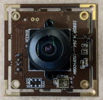
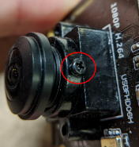
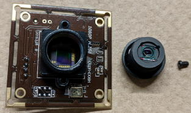
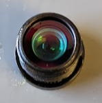
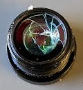
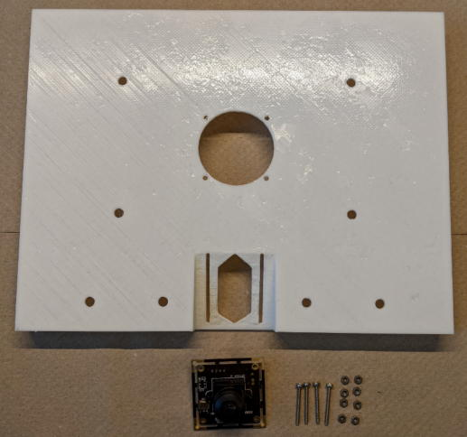
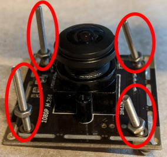
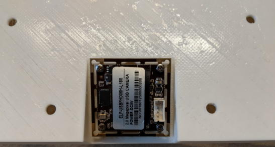
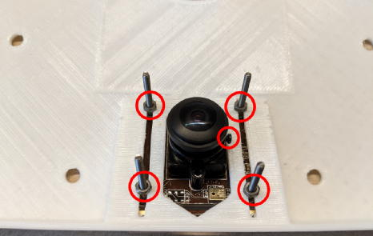

operanthouseのヘッダー
Kitaya lab
電子回路の組み付け（蓋）
USBカメラの赤外線フィルターの取り外し
通常のUSBカメラには赤外線フィルターが入っており、これを取り除くと赤外線カメラになります（最近のカメラではレンズと赤外線フィルターが一体化した物があるのですが、それは赤外線カメラ化できません）。
カメラを分解します。

レンズ側面のネジを緩めるとレンズが回るようになるので、レンズを取り外してください。

もしネジではなくこのように接着されている場合は接着剤を剥がします。


中央に見える四角いガラスが赤外線フィルターです。四方が接着剤で固定されているのでニッパーでその部分を破壊して下さい。


そうするとフィルターを外せるので破片も含めて綺麗に取り除いて下さい。
元に組み直せばカメラの準備は完了です。

もし赤外線フィルターが円形の場合はニッパー等で突いてヒビを入れると取り除く事が出来ます。
→→

フタにカメラを固定して行きましょう。ネジはM2x20を用意して下さい。

ネジをこの様にセットします。
（もしカメラの位置調整が大変な場合はこれらのナットを省略したり、M3のナットを使ってみてください）

そして蓋に固定します。

マスクを入れたチャンバーに蓋を設置してカメラとマスクが干渉しないかチェックして下さい。

そしてUSBケーブルをラズベリーパイへ接続したらカメラの設置は完了です。


換気ファンの設置
次に換気ファンを蓋にM2x20のネジで取り付けましょう。
 >>>
>>>
5mm LEDの設置
蓋には5mm穴が開いてますが、バリがあると思うので5mmのドリルでバリを除去してください。

赤外線LEDを設置します。

報酬手掛りLEDをチャンバー側面に取り付けます。

白色LEDを装着します。

LEDが簡単に抜けてしまう場合、接着剤を穴の内側に少し塗って穴を細めて下さい。
最後にカメラカバーが嵌るかチェックをします。このパーツは接着しないで下さい。


これで完了です。